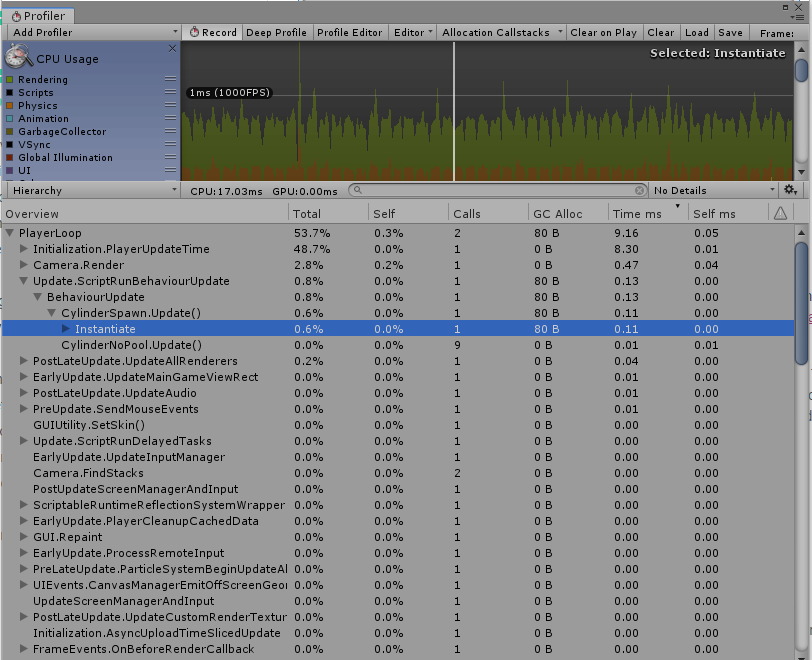

0x00
新坑《游戏编程模式》（作者 Robert Nystrom）。
在 Unity 下，用 C# 做了简单的实现，传送门：
链接：https://pan.baidu.com/s/10ExEhTy1ui8vZiCnFVS7Nw
提取码：3d03
其他模式传送门：
0x01
“使用固定的对象池重用对象，取代单独分配和释放对象，以此来达到提升性能和优化内存使用的目的。”
对象池模式是一种创建性模式，在对象池中包含了已经经过初始化并可以使用的对象，在用户需要时可以从对象池中获得对象并进行操作，当用户不需要时归还给对象池而非销毁对象。这是一种特殊的工厂对象。
对象池模式定义了一个保持着可重用对象集合的对象池类。其中的每个对象支持对其“使用中（in use）”状态的访问，以确定这个对象目前是否“存活（alive）”。在对象池初始化时，它预先创建了整个对象的集合（通常为一块连续区域），并将它们都置为“未使用（not in use）”状态。
当我们要创建一个新对象时就向对象池请求。它将搜索到一个可用的对象，将其初始化为“使用中”状态并返回。当对象不再被使用时，它将被置为“未使用”状态。使用该方法，对象便可以在无需进行内存或其他资源分配的情况下进行任意的创建和销毁。
对象池模式的使用情景：
对于可见游戏实体对象，视觉特效，数据结构等，在下面情况下会使用对象池。
需要频繁地创建和销毁对象
对象的大小一致
在堆上进行内存分配较慢或者会产生内存碎片（简单说，就是不连续的内存空间，当内存碎片过多，虽然内存余量较大，但会出现无法使用的现象）
每个对象封装着获取代价昂贵且可重用的资源。
0x02
在实践中，我们通过一个简单的射击场景来模拟，子弹作为可重用的对象，如果在更新函数中检测射击动作并生成子弹，在击中目标或超出范围时销毁对象，则会在更新函数中频繁地进行 GC。

在前面使用了 MoonSharp 在更新函数中对 Lua 脚本中的协程 GC，导致了在移动平台画面的卡顿。
实例中，简单实现了三种对象池的结构：
- 具体类型的对象池
只保存特定的类型，对象池作为单例由用户使用。
- 保存 GameObject 的对象池
是在 Unity 中的较为通用的对象池，在创建对象时，将对象池的引用保存在对象中。
- 泛型的对象池
类似第一种，但是将对象池的功能实现为抽象类，由每种类型的对象池继承，可以更清晰的找到对象与对象池的关系。